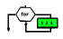

Iteração de um conjunto de valores |
 |

Permite iterar um conjunto de valores dentro do intervalo [ex1 , ex2[ onde os valores estão separados por ex3. O limite inicial de iterador está incluído e o limite final não. A instrução permite definir uma variável de iteração ou utilizar uma variável numérica já existente.
Sintaxe
iTERAR <[TIPO]> <var> DE <ex1> ATÉ <ex2> PASSO <ex3>
<instruções do algoritmo>
Fim
<TIPO> – tipo de variável numérica ( INTEGER | REAL) - Opcional.
<var> nome da variável de iteração.
<ex1> expressão computacional para determinar o valor inicial.
<ex2> expressão computacional para determinar o valor final.
<ex3> expressão computacional para determinar a separação entre os valores do intervalo.
Programas
 Exemplo 1 – contar por ordem crescente
Exemplo 1 – contar por ordem crescente
Exemplo 2 – Soma dos 5 primeiros pares